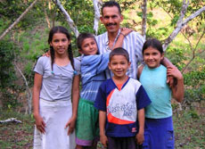
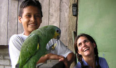
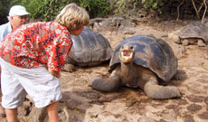

About Chacay
CHACAY is based jointly out of Quito, Ecuador, and Los Gatos, California. From its very inception, the company’s objective has been to promote Ecuador as a premiere destination for ecotourism and international community service. The CHACAY model goes beyond basic tourism: we introduce our clients to communities through local foundations, thus enabling you to not only experience the multiple facets of the country, but also connect with them personally.
Discover, Engage, Share, Enjoy!

Chacay’s Mission
We provide personalized travel experiences to students, families, retirees and corporations in Ecuador, the Andes, and South America. Chacay creates responsible encounters with local communities and individuals, enabling our clients to invest in them in a way that makes a significant difference, benefiting both our clients as well as the communities they visit.
Chacay’s Vision
We build bridges that introduce visitors from the northern hemisphere to the multiple facets of Ecuador through collaboration with foundations, the private sector, and academia, with the intention of becoming the region’s leading responsible tourism network and catalyst.
Chacay's Values
Responsibility: Chacay's commitment to responsible tourism extends to our clients, to the communities we serve, to our staff, to our providers, to the people of Ecuador and Peru, and to nature (sustainability through a light footprint).
Transparency: We believe that communication is the key to healthy, vibrant relationships, and to that end, we go out of our way to ensure that every contact with you, the communities we serve, and our staff is prompt, cordial and personal.
Integrity: By focusing on boutique tourism and personally tailored tours, we want to ensure that your experience visiting Ecuador, the Galapagos and Machu Picchu is a unique and unforgettable experience, thus ensuring that you become an avid enthusiast of the country and an enthusiastic Chasqui (Inca messenger)!

Our Community
Chacay is the nucleus of a growing network of corporations, foundations, communities and clients. Our primary objective is create a dynamic ecosystem of collaboration that effectively delivers Ecuador and its many facets to our customers. In Spanish, the expression is "dejar una huella ligera", or to leave a light footprint - by doing so, we ensure that Ecuador develops in a sustainable manner. Your visit to Ecuador through Chacay can help to ensure this vision: Touch the lives of others, and your life will be touched!